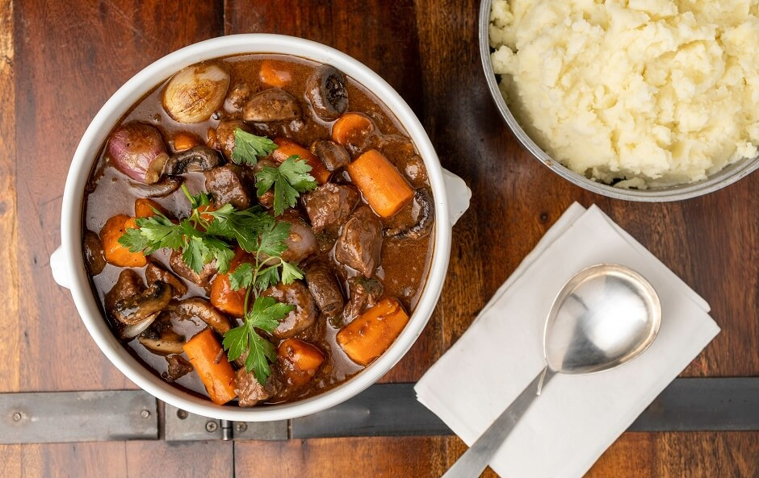

-
Confit de Canard

O confit de canard, conhecido também como confit de pato, é originário de Gascony, no sudoeste da França. A receita foi introduzida no país pelos romanos e o método de preparo era tradicionalmente usado para preservar a carne, já que não existiam geladeiras na época.
R$ 65,00
-
Ratatouille

Popularizado pelo filme da Disney e perfeito para um jantar romantico à luz de velas, o ratatouille é um delicioso ensopado de legumes de verão, levando pimentões, abobrinha e berinjela cozidos no molho de tomate. Ervas como o alecrim e o manjericão dão sabor e aroma à receita.
R$ 48,00
-
Boeuf Bourguignon
Um clássico absoluto da cozinha francesa, o boeuf bourguignon tem esse nome pois vem da região de Borgonha, no centro da França. O prato leva dois dos mais importantes ingredientes da culinária borgonhesa: o vinho tinto e a carne de gado da raça charolês.
R$ 55,00